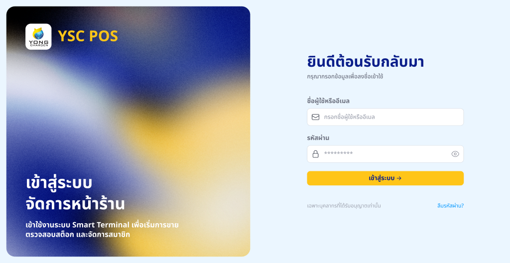
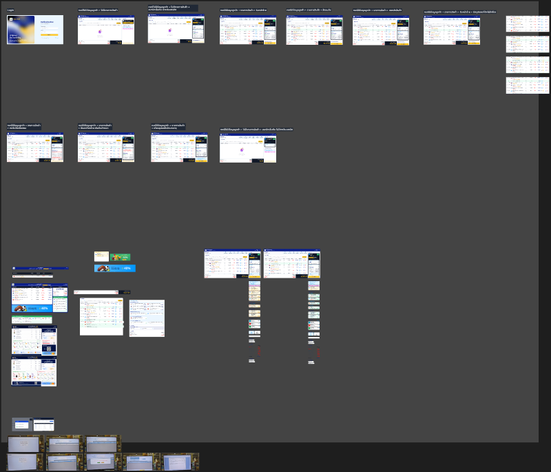
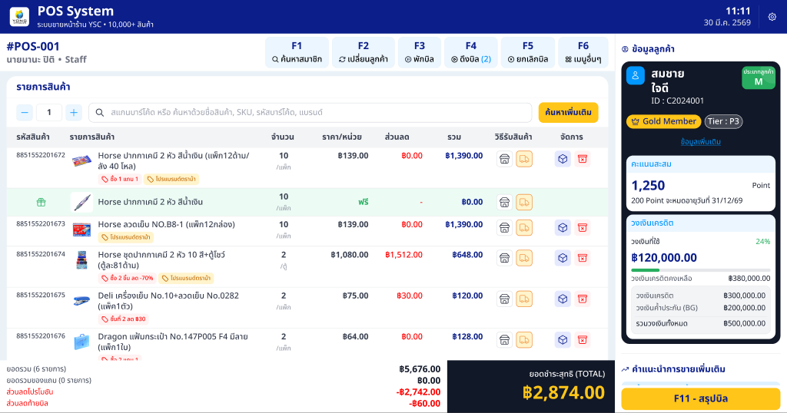
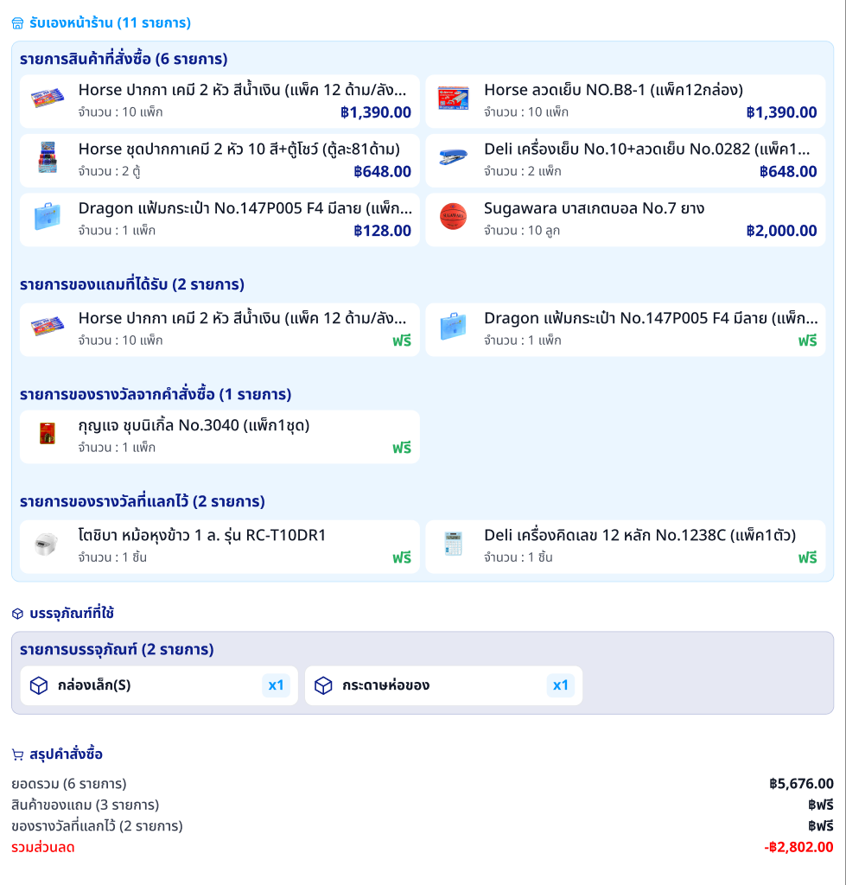
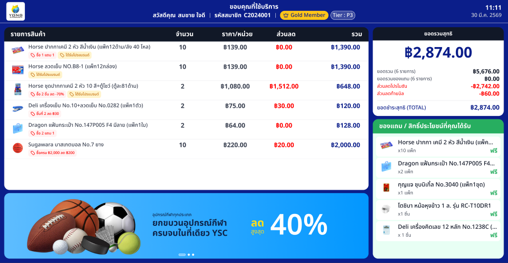
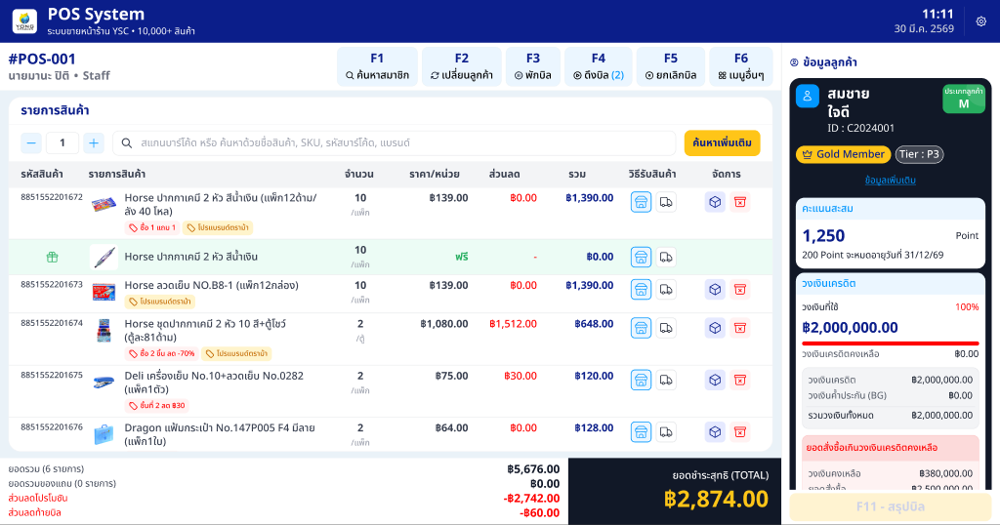

เอกสารฉบับนี้ระบุข้อกำหนดของระบบขายหน้าร้าน (Point of Sale — POS) ของยงเจริญศูนย์เครื่องเขียน สำหรับพนักงานแคชเชียร์ ครอบคลุมการเข้าสู่ระบบ การค้นหาลูกค้า การสแกนสินค้า การใช้โปรโมชั่นและคูปอง การแลกของรางวัล การเลือกวิธีรับสินค้า การชำระเงิน การพิมพ์ใบคำสั่งซื้อ และหน้าจอแสดงให้ลูกค้า (Customer Display) โดยอ้างอิงMockup จาก Figmaที่แนบมาและกฎเกณฑ์เชิงธุรกิจจาก ysc_business_rules.html v2.2
ตารางสรุปกรณีการใช้งานทั้ง 13 รายการของระบบขายหน้าร้าน ครอบคลุม Login ค้นหาลูกค้า สแกนสินค้า โปรโมชั่นและคูปอง การชำระเงิน 4 วิธี รายละเอียดเต็มอยู่ในหัวข้อที่ 7 พร้อม Mockup จาก Figma
| # | รหัส | ชื่อกรณีการใช้งาน | ผู้ใช้งานหลัก | กฎที่เกี่ยวข้อง | สถานะ Figma |
|---|---|---|---|---|---|
| 1 | UC-POS-001 | พนักงานแคชเชียร์เข้าสู่ระบบ | พนักงานแคชเชียร์ | — | มี Mockup |
| 2 | UC-POS-002 | ค้นหาและเลือกลูกค้า | พนักงานแคชเชียร์ | CC-05 | รอออกแบบ Modal |
| 3 | UC-POS-003 | สแกนบาร์โค้ดหรือค้นหาสินค้าเพิ่มลงตะกร้า | พนักงานแคชเชียร์ | PRD-03 | มี Mockup |
| 4 | UC-POS-004 | ระบบใช้โปรโมชั่นและส่วนลดอัตโนมัติ | ระบบ | หมวด 11 | มี Mockup |
| 5 | UC-POS-005 | ใช้คูปองส่วนลด | พนักงานแคชเชียร์ | PR-05 | มี Mockup |
| 6 | UC-POS-006 | แลกของรางวัลจากคำสั่งซื้อ | พนักงานแคชเชียร์ | หมวด 10 | มี Mockup |
| 7 | UC-POS-007 | เลือกวิธีการรับสินค้า (รับเอง / จัดส่ง / แยกส่ง) | พนักงานแคชเชียร์ | SHP-02 SHP-06 SHP-11 | มี Mockup |
| 8 | UC-POS-008 | ชำระเงิน | พนักงานแคชเชียร์ + ลูกค้า | P-01 CH-03 | รอออกแบบ Modal |
| 9 | UC-POS-009 | พิมพ์ใบคำสั่งซื้อและออกใบกำกับ | พนักงานแคชเชียร์ | INV-04 | มี Mockup |
| 10 | UC-POS-010 | หน้าจอลูกค้า (Customer Display) | ลูกค้าหน้าร้าน (ดู) | — | มี Mockup |
| 11 | UC-POS-011 | ลูกค้านิติบุคคล: วงเงินไม่พอ / มียอดค้าง | พนักงานแคชเชียร์ + หัวหน้าสาขา | หมวด 6 CC-02 NTF-06 | มี Mockup |
| 12 | UC-POS-012 | เตือนคูปองใกล้หมดอายุ | พนักงานแคชเชียร์ | — | มี Mockup |
| 13 | UC-POS-013 | ยกเลิกคำสั่งซื้อ / คืนสินค้าหน้าร้าน | พนักงานแคชเชียร์ + หัวหน้าสาขา | RTN-04 RTN-05 RTN-07 | รอออกแบบ Modal |
| เวอร์ชัน | วันที่ | รายละเอียดการเปลี่ยนแปลง | สถานะ |
|---|---|---|---|
| 1.0 | 16 พ.ค. 2569 | ฉบับแรกของเอกสารโมดูล POS อ้างอิง Figma file POS-System และ Business Rules v2.2 ครอบคลุม 13 Use Cases พร้อมแนบ Mockup 7 หน้าจอ | ปัจจุบัน |
| บทบาท | ชื่อ-นามสกุล | วันที่อนุมัติ | ลายเซ็น |
|---|---|---|---|
| เจ้าของผลิตภัณฑ์ (YSC) | ____________________ | ____________ | ____________ |
| หัวหน้าฝ่ายขายหน้าร้าน (YSC) | ____________________ | ____________ | ____________ |
| หัวหน้าฝ่ายไอที (YSC) | ____________________ | ____________ | ____________ |
| UX/UI Designer (Adeptio) | ____________________ | ____________ | ____________ |
| ผู้จัดการโครงการ (Adeptio) | ____________________ | ____________ | ____________ |
ระบบ POS เป็นระบบขายหน้าร้านของยงเจริญฯ ใช้โดยพนักงานแคชเชียร์ที่สาขา รองรับทั้งลูกค้าขาจร (Walk-in)และลูกค้าสมาชิก (ทั่วไป + นิติบุคคลที่มีวงเงินเครดิต) — ต้องทำงานได้รวดเร็ว ใช้งานง่าย และเชื่อมกับสต็อกของคลังหน้าร้านและ ConX ERP แบบเวลาจริง
| รหัส | เป้าหมายธุรกิจ | ตัวชี้วัด (KPI) |
|---|---|---|
| BG-POS-1 | ลดเวลาในการขายต่อรายการ เพิ่ม Throughput ของแคชเชียร์ | เวลาเฉลี่ยต่อบิล ≤ 90 วินาที |
| BG-POS-2 | คำนวณส่วนลดและโปรโมชั่นถูกต้องแบบอัตโนมัติ ลดข้อผิดพลาด | การคำนวณตรง 100% |
| BG-POS-3 | ลูกค้าสมาชิกได้รับสิทธิ์ (Tier, คะแนน, Coupon) ที่ POS เหมือนเว็บ | สิทธิ์สมาชิกตรงกันทุกช่องทาง |
| BG-POS-4 | รองรับการสั่งซื้อแบบหลายโหมด: รับเอง / จัดส่ง / แยกส่ง | ครบทุกโหมดในระบบเดียว |
| BG-POS-5 | ทำงานต่อเนื่องได้แม้เครือข่ายช้า / ขาดชั่วคราว | Offline mode ทำงานได้ ≥ 5 นาที ก่อนต้อง Sync |
| BG-POS-6 | หน้าจอลูกค้า (Customer Display) สร้างความโปร่งใส ลดข้อโต้แย้ง | มีจอลูกค้าที่ทุกเครื่อง POS |
| บทบาท | หน้าที่ในระบบ POS | สิทธิ์ |
|---|---|---|
| พนักงานแคชเชียร์ (Cashier) | ขายสินค้า เก็บเงิน พิมพ์ใบเสร็จ | ใช้งานหลัก |
| หัวหน้าสาขา (Store Manager) | อนุมัติส่วนลดพิเศษ ยกเลิกบิล จัดการลูกค้า | เต็มสิทธิ์ |
| ลูกค้าหน้าร้าน | ดูข้อมูลผ่านหน้าจอลูกค้า ชำระเงิน | ดูอย่างเดียว |
| ระบบ ConX ERP | รับคำสั่งซื้อ ออกเลข SO/OD ออกใบกำกับ | API |
| ระบบหลังบ้าน (Backoffice) | ส่งข้อมูลสินค้า ลูกค้า สต็อกหน้าร้าน แคมเปญ | API |
หน้าจอหลักของ POS ทุกหน้าใช้โครงสร้างเดียวกัน เปลี่ยนเฉพาะเนื้อหาตามสถานการณ์ — โครงสร้างประกอบด้วย 5 ส่วน:
| ส่วน | เนื้อหา |
|---|---|
| Top Bar (1920×82) | โลโก้, ชื่อสาขา, ผู้ใช้งาน, นาฬิกา, ปุ่ม Logout |
| Header (#POS-001) (1500×92) | Search bar สำหรับสแกน/ค้นหาสินค้า, ปุ่มลัด |
| Item Table (ตรงกลาง) | รายการสินค้าในตะกร้า + รูป + จำนวน + ราคา + ปุ่มลบ |
| Totals Bar (คำนวน) (1500×128) | ยอดรวม, ส่วนลด, ภาษี, ยอดสุทธิ, ปุ่ม "ชำระเงิน" |
| Right Rail (420 wide) | Panel ซ้อนกัน: Member → Promotion → Order Rewards → Coupons → Pickup/Packing → ปุ่ม "พิมพ์ใบคำสั่งซื้อ" |
หัวข้อนี้ระบุรายละเอียดทั้ง 13 Use Cases ของ POS พร้อมแนบ Mockup จาก Figma ที่ตรงกับแต่ละกรณี — บางกรณีอ้างอิง State Variant ที่ตรงกับสถานการณ์นั้น

พนักงานแคชเชียร์เข้าสู่ระบบ POS ก่อนเริ่มการขาย
มีบัญชีผู้ใช้ในระบบ และเครื่อง POS เปิดอยู่
ผูกคำสั่งซื้อกับลูกค้าสมาชิก เพื่อให้ได้สิทธิ์ Tier, คะแนนสะสม, Coupon

ระบบคำนวณส่วนลดและโปรโมชั่นอัตโนมัติเมื่อตรงเงื่อนไข ไม่ต้องให้พนักงานคำนวณเอง
ลูกค้าใช้คะแนนสะสมแลกของรางวัลจาก Rewards Catalog หรือรับของรางวัลตามเงื่อนไขคำสั่งซื้อ

ลูกค้าเลือกว่าจะรับสินค้าหน้าร้าน หรือให้จัดส่งไปที่อยู่


แสดงข้อมูลให้ลูกค้าหน้าร้านเห็นแบบเวลาจริง — เพิ่มความโปร่งใส ลดข้อโต้แย้ง

ป้องกันการขายเกินวงเงินหรือกรณีลูกค้ามียอดค้างชำระเกินกำหนด
แจ้งลูกค้าเมื่อมีคูปองใกล้หมดอายุที่ยังไม่ได้ใช้
ยกเลิกบิลที่ยังไม่ปิด หรือคืนสินค้าหลังจ่ายแล้ว
| รหัสหน้าจอ | ชื่อหน้าจอ | หน้าที่หลัก | Figma Node |
|---|---|---|---|
| SCR-POS-001 | หน้าจอเข้าสู่ระบบ POS | Login พนักงานแคชเชียร์ | 402:12824 |
| SCR-POS-002 | หน้าจอ Sales หลัก (Empty) | ไม่มีลูกค้า ไม่มีสินค้า (เริ่มต้น) | 262:7042 |
| SCR-POS-003 | หน้าจอ Sales — มีลูกค้า มีสินค้า รับเอง | โหมดรับเองหน้าร้าน | 23:906 |
| SCR-POS-004 | หน้าจอ Sales — โหมดจัดส่ง | สั่งจัดส่ง | 419:10807 |
| SCR-POS-005 | หน้าจอ Sales — โหมดแยกส่ง | Partial Delivery | 284:7895 |
| SCR-POS-006 | หน้าจอ Sales — Starter Member ไม่มีวงเงิน | ลูกค้าใหม่ ไม่มีเครดิต | 274:8758 |
| SCR-POS-007 | หน้าจอ Sales — Starter Member มีวงเงิน | ลูกค้าใหม่ มีเครดิต | 500:11641 |
| SCR-POS-008 | หน้าจอ Sales — วงเงินไม่พอ | เตือน Insufficient Credit | 284:6909 |
| SCR-POS-009 | หน้าจอ Sales — มียอดค้างชำระ | เตือน Overdue | 764:19332 |
| SCR-POS-010 | หน้าจอ Sales — เตือนคูปองใกล้หมดอายุ | Coupon Expiring | 764:20719 |
| SCR-POS-011 | หน้าจอ Sales — กับ Packing | มีบรรจุภัณฑ์เพิ่ม | 948:23095 / 948:25013 |
| SCR-POS-012 | หน้าจอลูกค้า (Customer Display) | จอด้านลูกค้า | 981:24345 |
| SCR-POS-013 | Modal สรุปคำสั่งซื้อ | ก่อนพิมพ์ใบเสร็จ | 1003:21390 |
| SCR-POS-014 | Pop-up ใกล้ได้รับโปรโมชั่น | Upsell prompt | 1001:21099 |
| SCR-POS-015 | Modal ค้นหาลูกค้า | ค้นหาด้วยเบอร์/รหัส | รอออกแบบ |
| SCR-POS-016 | Modal เลือกวิธีชำระเงิน | 4 วิธี + Split Payment | รอออกแบบ |
| SCR-POS-017 | Modal ยกเลิก / คืนสินค้า | Cancel/Return flow | รอออกแบบ |
| รหัส | กฎเกณฑ์ที่ใช้ใน POS |
|---|---|
| CH-03 | POS: รายละเอียดวิธีการชำระเงิน P-11 |
| P-01 ถึง P-08 | การชำระเงิน 4 วิธี (POS เพิ่มเงินสด) |
| หมวด 6 | กรณีลูกค้าใช้เงินเกินวงเงิน |
| หมวด 10 | ระดับสมาชิก คะแนน Tier ราคา P1-P5 |
| หมวด 11 | โปรโมชั่นและคูปอง |
| INV-04 | ใบกำกับ Y/N/M/A |
| SHP-02, SHP-03, SHP-11 | วิธีจัดส่ง (สาย A/B/C, Carrier ภายนอก, Partial) |
| SHP-06 | ค่าบรรจุภัณฑ์สินค้าแตกง่าย 5-10 บาท/ชิ้น |
| RTN-04 ถึง RTN-09 | การคืนสินค้า CN-DN Restocking Fee |
| POS-01 ถึง POS-08 | POS Operations (จากหมวด 16.2) |
| PRD-03 | 1 SKU มีหลายบาร์โค้ดได้ |
| CC-05 | สินค้ายอดนิยม 10 อันดับของลูกค้า |
| NTF-06 | Supervisor Alert กรณีขออนุมัติ |
| ระบบ | ข้อมูล | ทิศทาง |
|---|---|---|
| Backoffice OMS | คำสั่งซื้อจาก POS ส่งเข้าระบบกลาง | POS → OMS |
| Backoffice PRD | ข้อมูลสินค้า ราคา บาร์โค้ด สต็อกหน้าร้าน | PRD → POS |
| Backoffice CRM | ข้อมูลลูกค้า Tier วงเงิน คะแนน คูปอง | CRM ↔ POS |
| Backoffice Promotion | แคมเปญและเงื่อนไข | Promotion → POS |
| ConX ERP | รหัส SO/OD ใบกำกับภาษี การยืนยันชำระ | POS ↔ ConX |
| EDC (Credit Card Terminal) | การชำระบัตรเครดิต | POS → EDC |
| Receipt Printer | พิมพ์ใบคำสั่งซื้อและใบกำกับ | POS → Printer |
| Barcode Scanner | สแกนบาร์โค้ด | Scanner → POS |
| Cash Drawer | เปิดอัตโนมัติเมื่อรับเงินสด | POS → Drawer |
| Customer Display | จอแสดงข้อมูลให้ลูกค้า | POS → Display |
| อุปกรณ์ | สเปคขั้นต่ำ |
|---|---|
| เครื่อง POS | Touch Screen 15-17" / RAM 8GB / Windows หรือ Linux POS |
| จอลูกค้า (Customer Display) | หน้าจอ 10-15" Pole Display หรือ Dual Monitor |
| Barcode Scanner | USB / Bluetooth รองรับ 1D + 2D |
| Receipt Printer | Thermal 80mm รองรับ Auto-cut |
| Cash Drawer | ลิ้นชักเงินสด พร้อมสาย RJ11 เชื่อมเครื่องพิมพ์ |
| EDC Terminal | เครื่องรับบัตรของธนาคารหลัก (KBANK, SCB, BBL, KTB) |
| เครื่องพิมพ์ใบกำกับ | Laser A4 (กรณีออกใบเต็ม) |
| หัวข้อ | เกณฑ์ |
|---|---|
| เวลาตอบสนอง | สแกนบาร์โค้ด ≤ 0.5 วินาที, คำนวณส่วนลด ≤ 1 วินาที, พิมพ์ใบเสร็จ ≤ 3 วินาที |
| ความพร้อมใช้งาน | 99.9% ในช่วงเวลาเปิดร้าน |
| Offline Mode | ขายได้ต่อเนื่อง ≥ 5 นาที กรณีเครือข่ายขาด Sync เมื่อกลับมา Online |
| การรองรับโหลด | ≥ 100 บิล/ชั่วโมงต่อเครื่อง |
| การรองรับหลายเครื่อง | ≥ 20 เครื่องต่อสาขา |
| บทบาท | ขาย | ยกเลิก/คืน | อนุมัติส่วนลด | อนุมัติวงเงิน |
|---|---|---|---|---|
| พนักงานแคชเชียร์ | ทำได้ | ขออนุมัติ | - | - |
| หัวหน้าสาขา | ทำได้ | อนุมัติ | อนุมัติ | อนุมัติ (ตามวงเงินที่ได้รับ) |
| ผู้บริหาร | - | ดู | ดู | อนุมัติสูงสุด |
| รหัส | เกณฑ์ | UC อ้างอิง |
|---|---|---|
| AC-POS-G-01 | พนักงานขายบิลครบได้ทุกกรณีในเวลา ≤ 90 วินาที | UC-POS-002 ถึง 009 |
| AC-POS-G-02 | การคำนวณส่วนลด/โปรโมชั่นตรงกับเว็บและ Backoffice 100% | UC-POS-004 |
| AC-POS-G-03 | การชำระเงิน 4 วิธี + Split Payment ทำงานครบ | UC-POS-008 |
| AC-POS-G-04 | จอลูกค้าแสดงเวลาจริงตรงกับจอแคชเชียร์ | UC-POS-010 |
| AC-POS-G-05 | Offline Mode ขายได้ต่อเนื่อง 5 นาที | ทุก UC |
| AC-POS-G-06 | การยกเลิก/คืนต้องผ่านอนุมัติหัวหน้าและออก CN ถูกต้อง | UC-POS-013 |
| รหัส | ประเด็น / ความเสี่ยง |
|---|---|
| Q-POS-001 | รายละเอียดวิธีการชำระเงินที่ POS P-11 |
| Q-POS-002 | ตารางอำนาจการอนุมัติ (วงเงิน + ส่วนลด) P-02 |
| Q-POS-003 | Cash Drawer Reconciliation และ End-of-Day Report (เฟสถัดไป) |
| Q-POS-004 | Hold/Recall Sale (พักบิลและเรียกคืน) เฟสถัดไป |
| Q-POS-005 | ระยะเวลา Lock บัญชีกรณี Login ผิด รอยืนยัน |
| R-POS-001 | ความเสี่ยง: เครือข่ายขาดและ ConX ล่ม ทำให้ขายแบบเครดิตไม่ได้ |
| R-POS-002 | ความเสี่ยง: พนักงานหลายคนใช้บัญชีเดียวกัน ทำให้ Audit ผิดพลาด |
| R-POS-003 | ความเสี่ยง: ฮาร์ดแวร์เก่า ไม่รองรับสเปคขั้นต่ำ |
docs/ysc_screens/ แล้ว commit เข้า GitHub